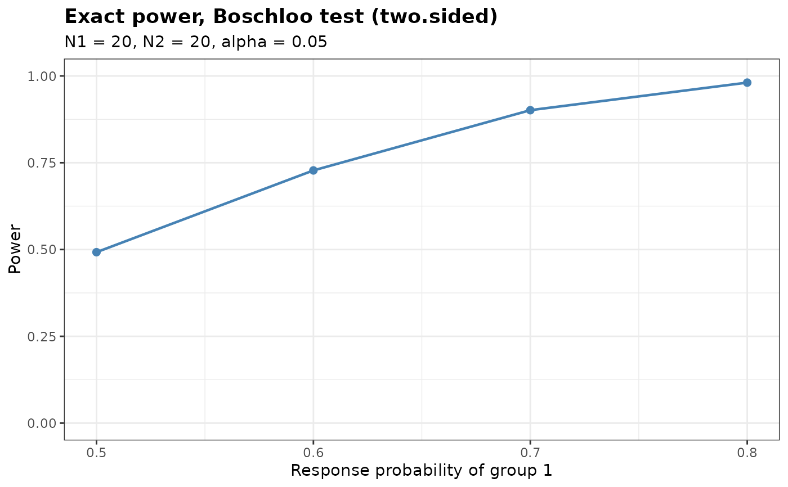

Calculates the exact power for two-arm trials with binary endpoints. Seven tests are
supported (see BinaryRR), each of which can be applied with a one-sided or
a two-sided alternative, and two of them also test non-inferiority with a margin on the
scale of the risk difference. Vectors of response probabilities are accepted.
Arguments
- p1
True probability of responders for group 1 (can be a vector)
- p2
True probability of responders for group 2 (can be a vector of the same length as
p1)- N1
Sample size for group 1
- N2
Sample size for group 2
- alpha
Level of significance for the alternative specified by
alternative- Test
Type of statistical test. Options:
'Chisq','Fisher','Fisher-midP','Z-pool','Boschloo','Blackwelder'or'Farrington-Manning'- alternative
Direction of the alternative hypothesis. Options:
'greater'(default),'less'or'two.sided'- tsmethod
Convention used to construct the two-sided version of the conditional tests. Options:
'minlike'(default) or'central'- n.grid
Number of grid points used to search over the nuisance parameter of the unconditional tests. Default is 100
- bb.gamma
Confidence level parameter of the Berger-Boos procedure. The default of 0 disables the procedure
- margin
Non-inferiority margin on the scale of the risk difference. The default of 0 gives a test of superiority. A value other than 0 tests the null hypothesis
p1 - p2 <= -marginagainstp1 - p2 > -marginwhenalternativeis'greater', andp1 - p2 >= marginagainstp1 - p2 < marginwhen it is'less'. It requiresTest = 'Blackwelder'or'Farrington-Manning', seeBinaryRR. A negative value tests for superiority by more than its absolute value- ref.pvalue
Logical. If
TRUE, the maximization over the nuisance parameter of the unconditional tests is refined between the grid points, seeBinaryRR. Default isFALSE
Value
An object of class bbssr_power, a data frame with one row per element of
p1 containing:
- p1
True probability of responders for group 1
- p2
True probability of responders for group 2
- N1
Sample size for group 1
- N2
Sample size for group 2
- alpha
Level of significance
- Test
Name of the statistical test
- alternative
Direction of the alternative hypothesis
- Power
Exact power
Details
The power is obtained by summing the joint probability mass function of the two
independent binomial counts over the rejection region returned by BinaryRR.
The summation covers the whole rejection region rather than a row-wise tail, so it
remains valid for two-sided tests, whose rejection regions are not contiguous within a
row of the outcome grid.
Author
Gosuke Homma (my.name.is.gosuke@gmail.com)
Examples
# Power of the one-sided chi-squared test
BinaryPower(p1 = 0.5, p2 = 0.2, N1 = 5, N2 = 5, alpha = 0.025, Test = 'Chisq')
#> Exact power for a two-arm trial with a binary endpoint
#>
#> Test : Chisq
#> Alternative : greater
#> Sample sizes : N1 = 5, N2 = 5
#> Alpha : 0.025
#>
#> p1 p2 Power
#> 0.5 0.2 0.183
# \donttest{
# Power over a range of response probabilities for the two-sided Boschloo test
pw <- BinaryPower(p1 = c(0.5, 0.6, 0.7, 0.8), p2 = rep(0.2, 4),
N1 = 20, N2 = 20, alpha = 0.05, Test = 'Boschloo',
alternative = 'two.sided')
print(pw)
#> Exact power for a two-arm trial with a binary endpoint
#>
#> Test : Boschloo
#> Alternative : two.sided
#> Sample sizes : N1 = 20, N2 = 20
#> Alpha : 0.05
#>
#> p1 p2 Power
#> 0.5 0.2 0.4923
#> 0.6 0.2 0.7279
#> 0.7 0.2 0.9014
#> 0.8 0.2 0.9808
plot(pw)

# }